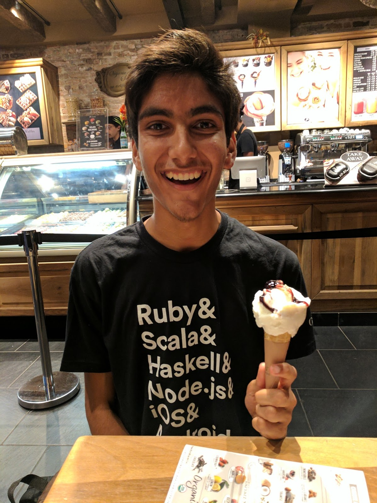

Today was my first day at my summer internship this year! I'm working in the NYC office of a company called Originate. They do business-to-business software and I'm looking forward to working on functional-programming code in production. My first day happened to line up with a regional all-hands meeting, so it was a good opportunity to get a high level sense for Originate.
I noticed the gender ratio at the first regional all-hands meeting. By my count 8 out of the 20 people in the room were female (40%). There were females at every level in the company: all the way from the lady leading the meeting (Joanna) to one of the interns.
Although at first glance that might seem encouraging, there is still room for improvement. Namely, it would be awesome to see more women in technical roles. There were only two females on the engineering team and one was the intern I mentioned. Everybody else was either in business development (like the lady in charge), recruiting, or on the design team. I'm not saying those roles aren't important and valuable, I'm just saying there's no reason tech should be so skewed.
Also, the intersectionality left something to be desired (I only counted two female POC, and only 4-5 total POC including me). This is tied to the larger issue of racial diversity, which is an entire topic in and of itself and thus unfortunately outside the scope of this post.
And finally, from a slide-deck on the company hierarchy I saw that Joanna was the only member of the board of directors that was female, and the only regional-director that was female. So I saw one instance of a high-ranking female, but I'm not sure it would be fair to extrapolate that to the rest of the company (she might be the exception rather than the rule).
I'd like to compare this the Turing Scholars Honors CS Program at UT Austin (from whence I hail). In my year (class of 2020) our gender ration was somewhere around 33%. My gut reaction to that number was dissappointment but people pointed out to me that it was pretty good compared to the national average. I pushed the thought out of my head until demographics were released for the incoming freshman (class of 2021). The ratio dropped to 28%. This was dissappointing to me mainly because I thought that at least things would be getting better. Instead of making progress we're moving backwards.
I asked the director of the program about this and he explained that they accepted as many female applications as they recieved that were qualified. He claimed the source of the low numbers should be traced back to earlier in the pipeline. Specifically, he mentioned that he didn't want to accept unqualified applications if it just meant he would be setting them up for failure.
I was unsatisfied with this answer because the metric of success is prior experience with programming and I think freshman year of college is early enough to catch people up to speed so they can go on to successful careers in tech. However, a peer of mine pointed out that my bias might play a role in that opinion: I had plenty of CS experience coming in so freshman year was not super difficult for me. But even people with a bit of experience really struggled in the honors classes we take; it would be unreasonable to expect people with the disadvantage of no experience to endure that.
Ultimately I think in the long run it would be worth giving a few people a shot to at least try it. But the flip side I hadn't fully considered is that unreasonably difficult scenarios like that can be bad for the mental health of students and its not worth it.
I also recently had the opportunity to attend Programming Languages Design and Implementation (PLDI 2017) in Barcelona, along with a mentorship workshop aimed at minorities called PLMW. It was a life-changing experience (it has actually determined my career-path and altered the course I imagine my life taking) and overwhelmingly positive. I am hoping to write a larger post (or maybe even a series of posts) about my experience, but in this post I will restrict myself to the gender diversity at PLMW/PLDI.
The week started off with PLMW, which had a passable gender ratio. It still wasn't great, especially considering the entire event was for underrepresented minorities. But out of the five presentations throughout the day, three of them were given by badass-females. Those three presentations were given by the real heavy-weights in programming languages research: Kathryn McKinley from Google, Jean Yang who works at the intersection of PL and security, and Roopsha Samanta who works in formal verification. In a later talk during the actual conference Kathryn was even introduced as the researcher who needs no introduction.
This speaks to a larger trend I've noticed from time to time in the tech industry (especially in Turing). Its not that people are always overtly sexist and dismissive of women as a rule. There are women and the women are doing great work. But it seems like the only females who survive in the field are an order of magnitude better than the average man in the same field1. We set the bar so high for females to succeed and congratulate ourselves when (against all odds) they reach it. Ideally, though, we should get to a point where the standard for women is no longer set so unreasonably high. Amy Nguyen put it best when she said
"the way we keep promoting only the exceptional isn’t going to create more acceptance for women in tech as a whole. It’s going to reject all the women who don’t meet those impossible standards."
I've arrived at a lot of problems, but approximately no solutions. Nevertheless, we forge onwards and upwards. At the very least, I'm glad the all-hands meeting on my first day was a catalyst for me to take a moment and think about the gender diversity around me. I hope that in writing this post I'll prompt you to do the same. If you have any thoughts I'd love to hear them, so feel free to reach out through email or on Twitter!
Based on anecdotal evidence, not numbers.↩